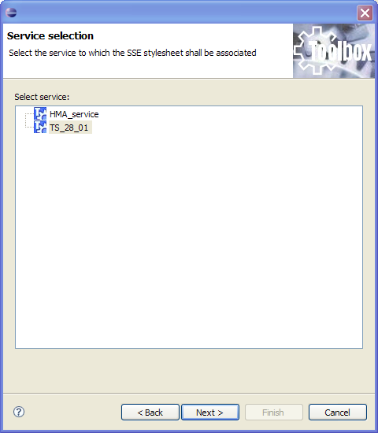
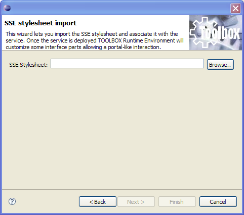
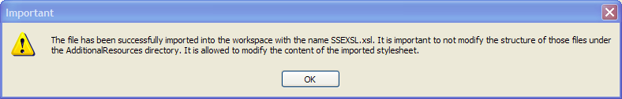

An SSE stylesheet can be imported and associated to a service in order to customized the output of instances execution in the Toolbox Runtime Environment. When deployed the stylesheet is carried with all other resource files. A new icon is displayed next to the output message. For a description see here.
In order to import an SSE stylesheet select "File > Import" and then select "SSE portal stylesheet" wizard. Click on "Next".

The user shall select the service to which the stylesheet shall be associated and then click on "Next".

The next page allows you to browse and select the stylesheet. To comlpete the task click on "Finish".

The above dialog is displayed providing more information about the files that have been created in the service project.